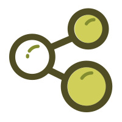
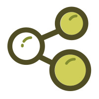

As I was hang there,I see wonderland，I don’t really see much of anything.But I see you.That is crazy.
春花秋月何时了
Right I die. My life before my eyes.
 



思念是一种病
我却病入膏肓
那一年南国之南，你如灼目之阳。最是那一低头的温柔，恰似水莲花不胜凉风的娇羞

北国之春
暖阳如你
那是我经常走的一条小巷，遇见了你和我的青春

相信未来
我是一个副标题
当蜘蛛网无情地查封了我的炉台， 当灰烬的余烟叹息着贫困的悲哀， 我依然固执地铺平失望的灰烬， 用美丽的雪花写下：相信未来。 当我的紫葡萄化为深秋的露水，
相信未来
当我的鲜花依偎在别人的情怀， 我依然固执地用凝霜的枯藤， 在凄凉的大地上写下：相信未来。 我要用手指那涌向天边的排浪， 我要用手掌 那托起太阳的大海， 摇曳着曙光那支温暖漂亮的笔杆， 用孩子的笔体写下：相信未来。
believe future
我之所以坚定地相信未来， 是我相信未来人们的眼睛—— 她有拨开历史风尘的睫毛， 她有看透岁月篇章的瞳孔。
believe future
我之所以坚定地相信未来， 是我相信未来人们的眼睛—— 她有拨开历史风尘的睫毛， 她有看透岁月篇章的瞳孔。
believe future
我之所以坚定地相信未来， 是我相信未来人们的眼睛—— 她有拨开历史风尘的睫毛， 她有看透岁月篇章的瞳孔。
believe future
我之所以坚定地相信未来， 是我相信未来人们的眼睛—— 她有拨开历史风尘的睫毛， 她有看透岁月篇章的瞳孔。